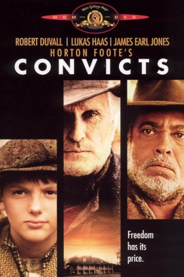

#1366 Convicts
Alternativ: Convicts
 
 IMDB-Wertung: 5.9 / 10
IMDB-Wertung: 5.9 / 10  Metascore: 0
Metascore: 0 
Texas, 1902: Offiziell ist die Sklaverei zwar abgeschafft, in Wirklichkeit wird sie jedoch immer noch gelebt. So auch auf der Farm des Plantagenbesitzers Soll der seine schwarzen Arbeiter schindet, wo er nur kann. Der 13-jährige Ausreißer Horace erfährt die Ungerechtigkeiten auf der Plantage am eigenen Leib. - Ambitinierter Film über die letzten Tage der Kindheit.
Jahr: 1991
Dauer: 93 Minuten
FSK:
Land: USA Studio: M.C.E.G. Virgin Home EntertainmentTonspuren: DD2.0 - ,
Untertitel:
Auflösung: 720p (1280x720) Größe: 2652 MB
Genre: Drama
Regisseur: Peter Masterson
Drehbuch: Horton Foote, Horton Foote
Soundtrack: Peter Rodgers Melnick
Darsteller:
 Robert Duvall als Soll Gautier
Robert Duvall als Soll Gautier Lukas Haas als Horace Robedaux
Lukas Haas als Horace Robedaux James Earl Jones als Ben Johnson
James Earl Jones als Ben Johnson- Starletta DuPois als Martha Johnson
- Carlin Glynn als Asa
- Gary Swanson als Billy
 Lance E. Nichols als Sherman Edwards
Lance E. Nichols als Sherman Edwards Carol Sutton als Lena
Carol Sutton als Lena- Calvin Levels als Leroy
- Mel Winkler als Jackson
- Bob Edmundson als Overseer
 John McConnell als Guard #1
John McConnell als Guard #1- Jerry Biggs als Guard #2
- Martin F. Schacker als Guard #3
- Walter Breaux Jr. als Singing Convict
- Tony Frank als Sheriff
- Duriel Harris als Convict #1
- Otis Jenkins als Convict #2
- Joe 'Cool' Davis als Cobb
Datei: X:\1991\Convicts (1991, FSK, 1280x720).mkv seit 28.06.2015
Festplatte: HD 1987-1991
 Es gibt insgesamt 53 Filme in der Gruppe '1991'
Es gibt insgesamt 53 Filme in der Gruppe '1991'